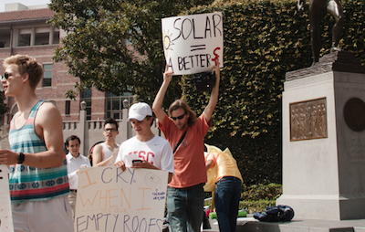
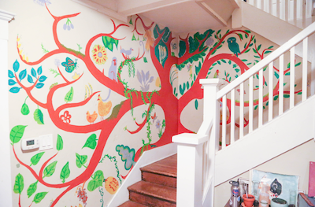

Environmental degradation looms as the 21st century's biggest challenge. But is USC doing enough?

A Clearer Plan
As one sustainability plan nears its end, students push for the next one to be stronger

Green house
At this 28th Street house, students have built an eco-friendly community